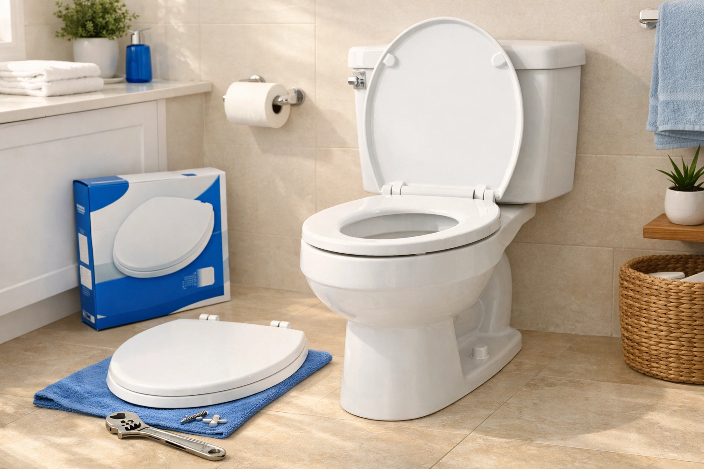
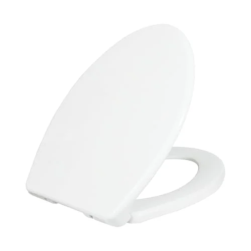
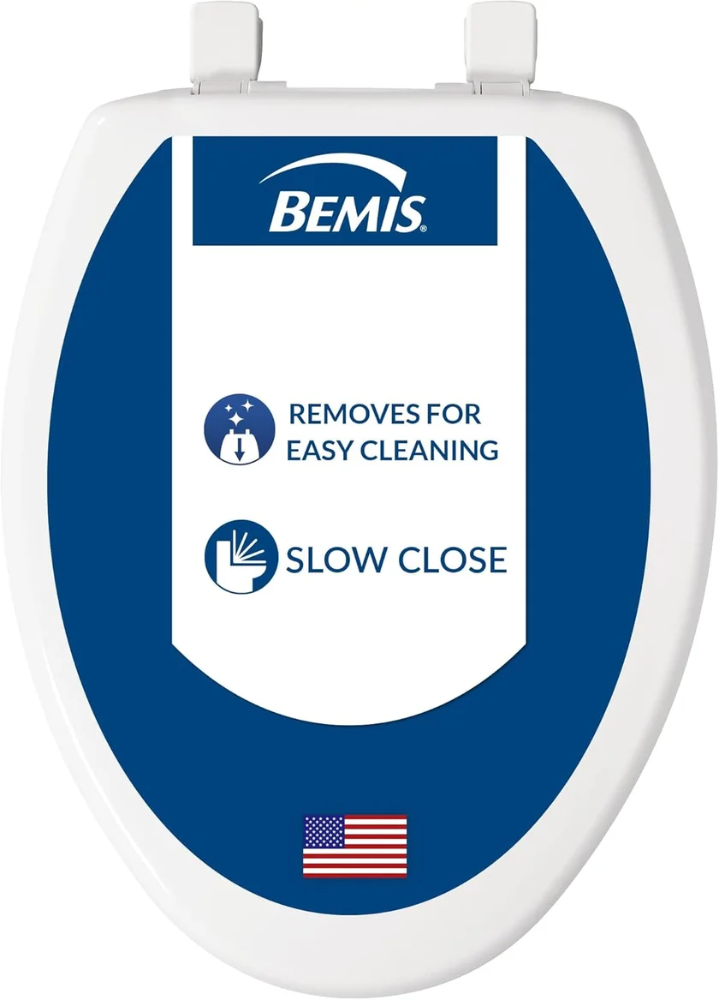
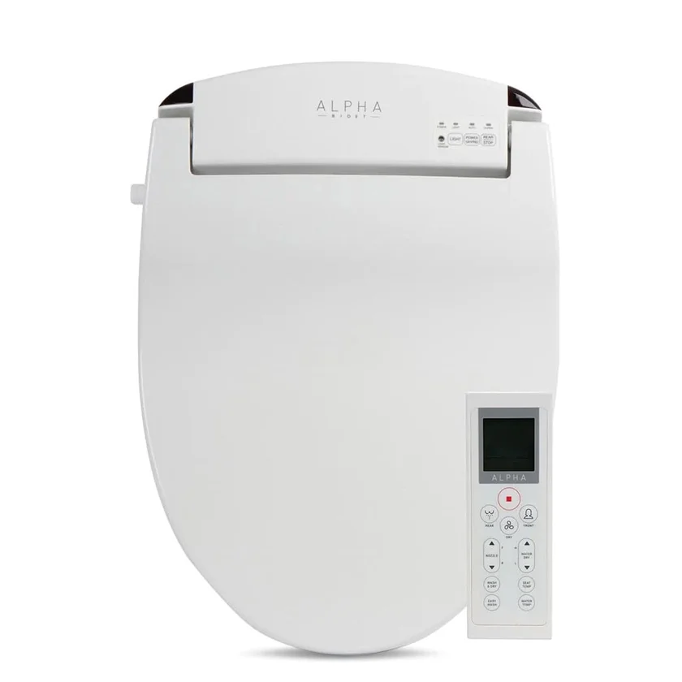

How to Replace a Toilet Seat: Complete Step-by-Step Guide
Prices and picks verified as of August 2026. Independent, reader-supported reviews.

Contains affiliate links (disclosure)
Can You Replace a Toilet Seat Yourself?
Yes. Replacing a toilet seat is one of the simplest home improvement tasks. You only need a wrench, a screwdriver, and 10-15 minutes. No plumber required. The process involves removing two bolts, lifting the old seat off, and bolting the new one in place. If your bolts are rusted, add 15 minutes and a can of penetrating oil.
Bottom line: our top pick is the LUXE TS1008E Elongated Comfort Fit Toilet Seat with Slow Close at $49.99. The best budget option is the Bemis 7300SLEC Slow Close Toilet Seat at $29.99.

A wobbly, cracked, or stained toilet seat is one of those small annoyances that makes your entire bathroom feel neglected. The good news: you can replace it yourself in under 15 minutes, with no special skills and minimal tools. Whether your current seat finally gave up after years of service or you are upgrading to a soft-close model, the process is the same.
In this guide, we walk through every step of a toilet seat replacement, from removing stubborn rusted bolts to measuring your bowl correctly (because getting an elongated vs round toilet seat wrong is the number-one mistake people make). We also cover the most common pitfalls and recommend three seats that make the job even easier.
Already know how to remove your old seat and just need installation tips? Jump to our full installation guide for even more detail on the mounting process.

LUXE TS1008E
Quick-release hinges let you remove and install the seat in seconds, no tools required for removal. Slow-close lid included.
Check Price on AmazonWhy You Should Trust Us
I have researched toilet seat replacement for Best Toilet Seats, covering every bolt type, hinge system, and removal challenge. This guide addresses the problems that make a simple job frustrating — especially corroded bolts that will not budge.
When Should You Replace Your Toilet Seat?
Toilet seats do not last forever. Most manufacturers recommend replacement every 5-7 years, but several signs indicate your seat needs to go sooner. Here is how to know when it is time for a change.
Signs of Wear and Damage
The most obvious reason to replace a toilet seat is physical damage. Cracks in the plastic or wood are not just cosmetic; they can pinch skin, harbor bacteria, and worsen over time. Even hairline cracks absorb moisture and cleaning chemicals, weakening the material further.
- Visible cracks or chips: Any crack, no matter how small, compromises the seat's structural integrity and hygiene
- Permanent staining: When deep-cleaning with bathroom cleaner no longer removes discoloration, the surface coating has degraded
- Wobbling or shifting: If tightening the bolts no longer fixes the movement, the bolt holes in the seat may be worn or stripped
- Peeling or bubbling finish: Common on painted wood seats after 3-5 years in humid bathrooms
Hygiene Concerns
Even a seat that looks fine on the surface can harbor bacteria in microscopic scratches and worn areas. The CDC recommends regular replacement of bathroom surfaces that can no longer be effectively sanitized. If your seat has a rough texture where it was once smooth, bacteria are finding places to hide.
Upgrading for Comfort or Features
Sometimes replacement is not about damage at all. Modern toilet seats offer features that were not widely available five years ago:
- Soft-close hinges: Eliminate slamming and reduce wear on the toilet bowl rim. See our best soft-close toilet seats guide.
- Quick-release mechanisms: Let you detach the entire seat with one button press for thorough cleaning underneath
- Heated seats: A genuine comfort upgrade for cold bathrooms. We cover options in our heated toilet seats guide.
- Bidet integration: Combine seat replacement with a bidet upgrade. See our bidet toilet seats guide for options from $24 to $700.
Whether your seat is cracked, stained, or simply outdated, the replacement process is the same straightforward procedure we outline below.
Tools and Materials You'll Need
One of the best things about replacing a toilet seat is how few tools you need. Most households already have everything required. Here is the complete list:
Essential Tools
- Adjustable wrench or pliers - For gripping and turning the nuts underneath the toilet
- Flathead screwdriver - To hold the bolt from the top while you turn the nut from below
- Cleaning supplies - Bathroom cleaner and a cloth or paper towels for cleaning the mounting area
For Rusted or Stubborn Bolts
- Penetrating oil (WD-40 or PB Blaster) - Dissolves rust and corrosion on old metal bolts
- Hacksaw or oscillating multi-tool - Last resort for cutting through bolts that absolutely will not turn
- Safety glasses - Protect your eyes if you need to cut through hardware
Materials
- New toilet seat - Matched to your bowl shape (elongated or round) and bolt spread
- Mounting hardware - Usually included with the new seat; replace old hardware even if it looks fine
Total cost for tools if you need to buy everything from scratch: under $15. The toilet seat itself typically runs from $20 to $50 for a standard model, or $150 to $350 if you are upgrading to a bidet seat. Check our best toilet seats of 2026 for top-rated options at every price point.
How to Remove Your Old Toilet Seat
Removing the old seat is the step most people dread, especially if the bolts are old and corroded. Follow these three steps and you will have it off in minutes.
1 Open the Bolt Covers
Look at the back of your toilet seat where it connects to the bowl. You will see two round plastic covers (called bolt caps or hinge covers) that conceal the mounting bolts. Pry these open with your fingers or a flathead screwdriver. They typically flip up on a hinge or pop off entirely.
Some older seats have decorative caps that twist off counter-clockwise. If the cap does not flip up, try twisting it first.
2 Loosen and Remove the Bolts
With the bolt covers open, you will see the bolt heads. Here is the technique that works every time:
- Hold the bolt head from the top with a flathead screwdriver (slot it into the groove on the bolt head)
- Reach underneath the bowl to grip the nut with your wrench or pliers
- Turn the nut counter-clockwise while holding the bolt steady from above
- Once the nut is loose, unscrew it the rest of the way by hand
- Repeat for the second bolt
3 Lift Off and Clean
With both bolts removed, lift the old seat straight up and off the bowl. It may stick slightly if grime has built up around the edges, so give it a gentle wiggle if needed.
Now clean the entire mounting area thoroughly. Spray bathroom cleaner around both bolt holes and along the back rim. Use a cloth or old toothbrush to clean inside the bolt holes. Remove any old caulk, gasket material, or mineral deposits. This step is important because debris under the new seat can cause wobbling.
How to Measure for a New Toilet Seat
Buying the wrong size toilet seat is the most common mistake in this entire process. Fortunately, measuring takes under 60 seconds if you know what to look for.
Elongated vs Round: The Only Measurement That Matters
Toilet bowls come in two standard shapes, and you must match your seat to your bowl. Here is how to tell which one you have:
- Measure from the front of the bowl to the center of the mounting bolt holes (not the back of the tank). Use a tape measure from the center of the bolt holes straight forward to the very front edge of the bowl.
- Round bowls measure approximately 16.5 inches (42 cm) from bolt holes to front edge
- Elongated bowls measure approximately 18.5 inches (47 cm) from bolt holes to front edge
If your measurement falls between 17 and 18 inches, you almost certainly have an elongated bowl. True round bowls are distinctly shorter. For a deeper comparison, read our elongated vs round toilet seats guide.
Check the Bolt Spread
The bolt spread is the distance between the centers of the two bolt holes on the back of your toilet bowl. The standard bolt spread for residential toilets in the United States is 5.5 inches (14 cm). Nearly all replacement toilet seats are designed for this measurement.
However, some commercial toilets, very old models, or European-style toilets have non-standard bolt spreads. Measure yours to be sure. If it is not 5.5 inches, you will need to search for a seat specifically compatible with your bolt spread.
Quick Size Reference
| Feature | Round | Elongated |
|---|---|---|
| Length (bolt holes to front) | ~16.5" | ~18.5" |
| Bowl Width | ~14" | ~14" |
| Bolt Spread | 5.5" (standard) | 5.5" (standard) |
| Best For | Small bathrooms | Comfort, modern homes |
| Shape | Circular | Oval |
How to Install the New Toilet Seat
With the old seat removed and your bowl measured, installation is the easy part. Most new seats come with all the hardware you need in the box. Discard your old bolts and hardware, even if they look fine, as new hardware ensures a secure, rattle-free fit.
1 Position the Seat and Insert Bolts
Unbox your new toilet seat and identify all the hardware: typically two bolts, two nuts, two washers, and possibly plastic anchors or spacers. Place the seat on the bowl with the hinges at the back, aligning the holes in the seat's hinge brackets with the bolt holes on the bowl.
Drop the bolts through the hinge brackets and down through the holes in the bowl. If your seat uses a top-mount system (increasingly common), follow the manufacturer's instructions, as the bolt and anchor mechanism works differently from the traditional bottom-mount approach.
2 Attach the Nuts and Hand-Tighten
Reach underneath the bowl and thread the washers (rubber washer first, then metal washer if included) onto each bolt. Then thread the nut onto each bolt and hand-tighten. At this stage, the seat should feel snug but still allow you to adjust its position.
Center the seat on the bowl by looking at it from the front. The seat should be evenly spaced on both sides and the front edge should be aligned with the front of the bowl. Adjust while the bolts are still hand-tight.
3 Final Tighten and Test
Once the seat is centered, hold each bolt from the top with your screwdriver and tighten the nut from below with your wrench. Use firm pressure but stop as soon as the seat feels solid. Do not continue tightening beyond this point.
Test the seat by:
- Sitting on it and shifting your weight side to side (no wobble = correct tightness)
- Opening and closing the lid several times (should move smoothly)
- If it is a slow-close model, verifying the soft-close mechanism works from any angle
- Checking that the rubber bumpers on the underside of the seat contact the bowl evenly
The entire installation process takes 5-10 minutes for a standard seat. Quick-release models like the LUXE TS1008E can be installed in under 3 minutes because the mounting bracket stays on the toilet and the seat simply clicks into place.
Common Mistakes to Avoid
We have seen hundreds of toilet seat installations go wrong for the same handful of reasons. Avoid these mistakes and your replacement will last years without issues.
-
Over-Tightening the Bolts
This is the most dangerous mistake. Toilet bowls are porcelain, which is strong under compression but brittle under point pressure. Over-tightening the mounting bolts can crack the bowl, and a cracked toilet bowl means a full toilet replacement costing $200-$500 or more. Stop tightening as soon as the seat is stable and does not wobble. If you can sit on it without shifting, it is tight enough.
-
Buying the Wrong Size
Round and elongated seats are not interchangeable. An elongated seat on a round bowl overhangs dangerously at the front. A round seat on an elongated bowl leaves an uncomfortable gap. Always measure before you buy. If you are unsure, measure twice: the 16.5-inch versus 18.5-inch difference is unmistakable.
-
Ignoring Hinge Compatibility
Not all hinges are created equal. Some seats have top-mount bolts that tighten from above; others use the traditional bottom-mount approach. If you are replacing a seat on a toilet with limited clearance underneath (such as a wall-mounted toilet or one in a tight corner), a top-mount seat makes the job significantly easier. Check the mounting style before purchasing.
-
Reusing Old Hardware
Even if your old bolts, nuts, and washers look fine, replace them with the hardware included with the new seat. Old hardware may have microscopic corrosion that accelerates under bathroom humidity, leading to a wobbly seat within months.
-
Skipping the Cleaning Step
Installing a new seat on a dirty mounting surface creates an uneven contact area, which causes wobbling and premature wear on the bolt holes. Take two minutes to clean the rim and bolt holes before installing the new seat.
-
Forcing Rusted Bolts
When old bolts are rusted, reaching for the biggest wrench and forcing them to turn often results in a cracked toilet bowl or snapped bolt that is even harder to remove. Always use penetrating oil first and be patient. Cutting through the bolt is safer than forcing it.
Best Toilet Seats for Easy Replacement
If you are replacing your toilet seat, you might as well choose one that makes the next replacement easier, too. These three seats are specifically selected for their easy-install features, proven durability, and strong customer reviews.
What we like
- Quick-release makes cleaning underneath effortless
- Slow-close mechanism is smooth and quiet
- Easy install with no special tools needed
- Excellent value under $30
Flaws but not dealbreakers
- Elongated only (no round version in this model)
- White color only
The LUXE TS1008E is our top pick specifically because of its quick-release hinge system. Press the two release buttons on either side and the entire seat lifts off, giving you full access to the rim for cleaning. The mounting bracket stays in place, so reinstalling the seat takes less than 5 seconds. This alone makes the TS1008E the best choice for anyone who wants the easiest possible replacement experience.
The slow-close mechanism works reliably at any angle. Drop the lid from fully open and it glides down smoothly over about 5 seconds. The polypropylene material is stain-resistant and holds up well in humid bathroom environments.

What we like
- STA-TITE system keeps the seat tight for years
- Over 40,000 reviews with high ratings
- Sturdy molded wood feels premium
- Available in multiple colors beyond white
Flaws but not dealbreakers
- No quick-release feature
- Heavier than plastic seats
Bemis is one of the most trusted names in toilet seats, and the 7300SLEC shows why. The STA-TITE fastening system is the standout feature: it uses a combination of a rubber gasket and a special bolt design that prevents the nuts from loosening over time. If you have ever had a toilet seat that starts wobbling after a few months, this system solves that problem permanently.
The Whisper Close hinge works similarly to other slow-close mechanisms but is noticeably quieter than many competitors. The molded wood construction gives the seat a solid, substantial feel compared to hollow plastic seats. At around $30, it is one of the best values in the category, backed by over 40,000 positive reviews.

What we like
- All-in-one upgrade: bidet, heated seat, dryer
- Remote control makes adjustments easy
- LED night light is surprisingly useful
- Self-cleaning nozzle for low maintenance
Flaws but not dealbreakers
- Requires nearby electrical outlet (GFCI)
- Higher price point than standard seats
If you are already going through the trouble of replacing your toilet seat, the LEIVI bidet seat represents an opportunity to transform your entire bathroom experience. The installation process is identical to a standard seat replacement for the mounting itself. The only additional step is connecting the water supply line (a T-valve splitter is included) and plugging into a GFCI electrical outlet.
The heated seat alone is worth the upgrade if you live in a cold climate. Adjustable temperature settings let you dial in exactly the warmth you want. The bidet function with adjustable water pressure and temperature replaces the need for toilet paper entirely. The wireless remote means no reaching for controls mounted on the side of the seat. At $240, it is a significant investment over a basic seat, but the comfort improvement is substantial.
Quick Comparison
| Product | Type | Best For | Rating | Price |
|---|---|---|---|---|
| LUXE TS1008E | Elongated, Slow Close | Easiest replacement | 4.5/5 | ~$30 |
| Bemis 7300SLEC | Elongated, Slow Close | Best value, never loosens | 4.4/5 | $30.48 |
| LEIVI Bidet Seat | Elongated, Electric Bidet | Complete bathroom upgrade | 4.5/5 | $239.98 |
Q: How long does it take to replace a toilet seat?
A standard toilet seat replacement takes 10-15 minutes from start to finish.
Q: Do all toilet seats fit the same?
No.
Frequently Asked Questions
Q: How long does it take to replace a toilet seat?
A standard toilet seat replacement takes 10-15 minutes from start to finish. This includes removing the old seat, cleaning the mounting area, and installing the new one. If the mounting bolts are rusted or corroded, the job can take up to 30 minutes because you will need to apply penetrating oil and wait for it to work. Quick-release seats can be swapped in under 5 minutes if the mounting bracket is already in place.
Q: Do all toilet seats fit the same?
No. There are two standard sizes: elongated (approximately 18.5 inches from bolt holes to front) and round (approximately 16.5 inches). The bolt spread (distance between mounting holes) is standardized at 5.5 inches for most residential toilets, but the bowl shape must match the seat shape. An elongated seat will not fit properly on a round bowl and vice versa. Always measure before purchasing.
Q: Can I replace a toilet seat without any tools?
Some modern toilet seats feature quick-release mechanisms and hand-tightening wing nuts that require no tools at all. The LUXE TS1008E, for example, can be removed with one button press and reinstalled by hand. However, most standard toilet seats still require at least an adjustable wrench or pliers and a flathead screwdriver for proper installation.
Q: How do I remove rusted toilet seat bolts?
Start by applying penetrating oil (WD-40, PB Blaster, or Liquid Wrench) to both the top and underside of each rusted bolt. Wait 15-30 minutes for the oil to penetrate the corrosion. Try loosening with pliers while holding the bolt from above with a screwdriver. If the bolt still will not turn after two applications, use a hacksaw or oscillating multi-tool to carefully cut through the bolt below the toilet rim. Protect the porcelain with painter's tape before cutting.
Q: How often should you replace a toilet seat?
Most toilet seats should be replaced every 5-7 years under normal household use. Replace sooner if you notice any cracks (even hairline ones), permanent staining that cleaning products cannot remove, persistent wobbling that tightening the bolts does not fix, or a slow-close mechanism that no longer works. In households with children or heavy use, replacement every 3-5 years is more realistic.
Related Guides
Final Recommendation
Replacing a toilet seat is one of the easiest home improvement tasks you can tackle. With the right tools and 15 minutes of your time, you can eliminate wobbling, cracking, and staining for years to come. Here is a quick summary of our recommended seats:.
- Best Overall (Quick Release): LUXE TS1008E -- Quick-release hinges, slow-close, under $30. The easiest seat to install and remove.
- Best Budget: Bemis 7300SLEC -- STA-TITE system prevents loosening, 40,000+ reviews, proven reliability at $30.
- Best Upgrade: LEIVI Electric Bidet Seat -- If you are replacing your seat anyway, consider upgrading to heated seat, bidet, and remote control for $240.
For most people, the LUXE TS1008E is the best choice. The quick-release system means you will never struggle with removal again, and the slow-close mechanism is a genuine quality-of-life improvement. At under $30, it costs the same as a basic seat but delivers significantly more convenience.
Remember the three golden rules: measure before you buy (elongated vs round), do not over-tighten (snug is enough), and always clean the mounting area before installing the new seat. Follow these rules and your new toilet seat will serve you well for the next 5-7 years.
Explore Our Network
Our network of expert review sites covers every bathroom essential: